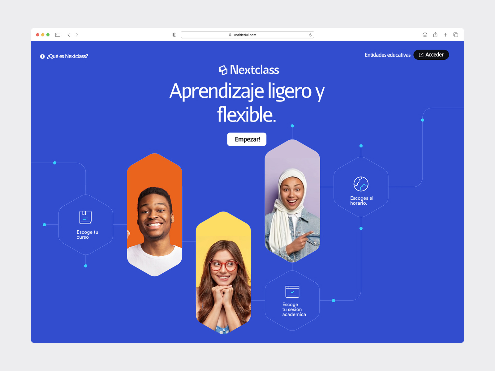

Acerca del proyecto

1. Introducción
El proyecto es una aplicación web de asesoria académica, diseñado para facilitar la comunicación y el seguimiento académico entre estudiantes y profesores. Implementada en Java utilizando el framework Spring Boot, esta aplicación ofrece una solución robusta y escalable para gestionar sesiones de asesoría, consultas, y recursos educativos de manera eficiente.
2. Objetivos
- Facilitar la Comunicación: Proveer un canal directo entre estudiantes y asesores para consultas y seguimiento de progreso académico.
- Gestión de Asesorías: Permitir la programación, gestión y seguimiento de sesiones de asesoría académica.
- Recursos Educativos: Ofrecer un repositorio centralizado de materiales y recursos educativos.
3. Funcionalidades Principales
- Registro y Autenticación: Usuarios (estudiantes y asesores) pueden registrarse y autenticarse de forma segura.
- Perfil de Usuario: Gestión de perfiles, donde los usuarios pueden actualizar su información personal y académica.
- Gestión de Sesiones de Asesoría:
- Programación: Estudiantes pueden solicitar y programar sesiones de asesoría.
- Confirmación: Asesores pueden aceptar, rechazar o reprogramar las solicitudes.
- Historial: Registro de todas las sesiones pasadas y futuras.
- Comunicación: Sistema de mensajería interna para consultas rápidas entre estudiantes y asesores.
- Recursos Educativos: Repositorio de documentos, videos y enlaces útiles compartidos por los asesores.
- Notificaciones: Alertas y recordatorios sobre sesiones próximas y nuevas comunicaciones.
- Feedback y Evaluación: Sistema para que estudiantes evalúen las sesiones y asesores reciban retroalimentación.
Estructura del proyecto
Todos los archivos están bien organizados, es muy fácil trabajar.
Body Structure
All the files are well organized, its so easy to work with the template.
Css Files
<!-- Bootstrap 4.5 -->
<link rel="stylesheet" href="assets/css/bootstrap.min.css" type="text/css" />
<!-- Bootstrap rtl 4.2 -->
<link rel="stylesheet" href="assets/css/bootstrap-rtl.min.css" type="text/css" />
<!-- animate -->
<link rel="stylesheet" href="assets/css/animate.css" type="text/css" />
<!-- Swiper -->
<link rel="stylesheet" href="assets/css/swiper.min.css" />
<!-- aos -->
<link rel="stylesheet" href="assets/css/aos.css" type="text/css" />
<!-- icons -->
<link rel="stylesheet" href="assets/css/icons.css" type="text/css" />
<!-- main css -->
<link rel="stylesheet" href="assets/css/main.css" type="text/css" />
<!-- main rtl css -->
<link rel="stylesheet" href="assets/css/main-rtl.css" type="text/css" />
<!-- normalize -->
<link rel="stylesheet" href="assets/css/normalize.css" type="text/css" />
Default Header
<!-- Start header -->
<header class="header-nav-center" id="myNavbar">
<div class="container">
<!-- navbar -->
<nav class="navbar navbar-expand-lg navbar-light">
<a class="navbar-brand" href="sass-products.html">
<img class="logo" src="../Rakon/assets/img/logo.svg" alt="logo" />
Rakon
</a>
<button class="navbar-toggler menu ripplemenu" type="button" data-toggle="collapse" data-target="#navbarSupportedContent" aria-controls="navbarSupportedContent" aria-expanded="false" aria-label="Toggle navigation">
<svg viewBox="0 0 64 48">
<path d="M19,15 L45,15 C70,15 58,-2 49.0177126,7 L19,37"></path>
<path d="M19,24 L45,24 C61.2371586,24 57,49 41,33 L32,24"></path>
<path d="M45,33 L19,33 C-8,33 6,-2 22,14 L45,37"></path>
</svg>
</button>
<div class="collapse navbar-collapse" id="navbarSupportedContent">
<ul class="navbar-nav mx-auto nav-pills">
<li class="nav-item">
<a class="nav-link" href="#home">Home</a>
</li>
<li class="nav-item">
<a class="nav-link" href="#services">Services</a>
</li>
<li class="nav-item">
<a class="nav-link" href="#Products">Products</a>
</li>
<li class="nav-item">
<a class="nav-link" href="#Pricing">Pricing</a>
</li>
<li class="nav-item">
<a class="nav-link" href="#faq">FAQ</a>
</li>
<li class="nav-item">
<a class="nav-link" href="#Testimonial">Testimonial</a>
</li>
</ul>
<div class="nav_account">
<button type="button" class="btn btn-default" data-toggle="modal" data-target="#mdllLogin">Sign in</button>
<a href="#Testimonial" class="btn scale btn_sm_primary bg-blue c-white effect-letter rounded-pill">
Try for free
</a>
</div>
</div>
</nav>
<!-- End Navbar -->
</div>
<!-- end container -->
</header>
<!-- End header -->
All Sections are inside the tag <main>
The base structure was organized by row, col-** class
<main data-spy="scroll" data-target="#navbar-example2" data-offset="0">
<!-- Start Banner Section -->
<section class="demo_1 banner_section" id="home">
<div class="container">
<div class="row justify-content-md-center text-center">
<div class="col-md-6">
<div class="banner_title">
<h1>Your Visual Bookmark Manager</h1>
<p>
The project management tool teams use to stay organized, avoid delays, and have time for the work that matters most.
</p>
<button type="button" class="btn scale rounded-pill btn-video btn_video" data-toggle="modal" data-src="https://www.youtube.com/embed/VvHoHw5AWTk" data-target="#mdllVideo">
<span class="tio play_circle"></span>
Discover this video
</button>
</div>
</div>
<!-- image Product -->
<div class="image_product">
<img src="../Rakon/assets/img/web-sass.png" alt="" />
</div>
</div>
</div>
</section>
<!-- End Banner -->
</main>
Tilte Section
You can use class .title_sections for titles
<div class="title_sections">
<div class="before_title">
<span>Cryptocurrency</span>
<span>Portfolio</span>
</div>
<h2>A project planner that won't let anything slip through the cracks</h2>
<p>
Lovely to look at and easy-to-use, Toggl Plan gives teams a visual overview of who’s doing what, and what’s coming up next. That means less stress and better results.
</p>
</div>
Default Footer
<!-- Start footer -->
<footer class="footer_short position-relative bg-white padding-py-3 z-index-1">
<div class="container">
<div class="row justify-content-md-center text-center">
<div class="col-md-8">
<a class="logo c-dark" href="sass-products.html">
<img src="../Rakon/assets/img/logo.svg" alt="">
Rakon
</a>
<div class="social--media">
<a href="#" class="btn so-link">
<span class="tio appstore"></span>
</a>
<a href="#" class="btn so-link">
<span class="tio github"></span>
</a>
<a href="#" class="btn so-link">
<span class="tio instagram"></span>
</a>
<a href="#" class="btn so-link">
<span class="tio google"></span>
</a>
<a href="#" class="btn so-link">
<span class="tio twitter"></span>
</a>
<a href="#" class="btn so-link">
<span class="tio facebook_square"></span>
</a>
</div>
<div class="other--links">
<a href="#">White paper</a>
<a href="#">Support</a>
<a href="#">API</a>
<a href="#">Privacy Policy</a>
<a href="#">Cookie Policy</a>
</div>
<div class="opyright">
<p>
© 2020 <a href="https://themeforest.net/user/orinostu" target="_blank">OrinoStu.</a> All Right Reseved
</p>
</div>
</div>
</div>
</div>
</footer>
<!-- End. Footer -->
JavaScript Fils
Add JavaScript before end the tag of </body>
<!-- jquery -->
<script src="assets/js/jquery-3.5.0.js" type="text/javascript"></script>
<!-- jquery-migrate -->
<script src="assets/js/jquery-migrate.min.js" type="text/javascript"></script>
<!-- popper -->
<script src="assets/js/popper.min.js" type="text/javascript"></script>
<!-- bootstrap -->
<script src="assets/js/bootstrap.min.js" type="text/javascript"></script>
<!--
============
vendor file
============
-->
<!-- particles -->
<script src="assets/js/vendor/particles.min.js" type="text/javascript"></script>
<!-- TweenMax -->
<script src="assets/js/vendor/TweenMax.min.js" type="text/javascript"></script>
<!-- ScrollMagic -->
<script src="assets/js/vendor/ScrollMagic.js" type="text/javascript"></script>
<!-- animation.gsap -->
<script src="assets/js/vendor/animation.gsap.js" type="text/javascript"></script>
<!-- addIndicators -->
<script src="assets/js/vendor/debug.addIndicators.min.js" type="text/javascript"></script>
<!-- Swiper js -->
<script src="assets/js/vendor/swiper.min.js" type="text/javascript"></script>
<!-- countdown -->
<script src="assets/js/vendor/countdown.js" type="text/javascript"></script>
<!-- simpleParallax -->
<script src="assets/js/vendor/simpleParallax.min.js" type="text/javascript"></script>
<!-- waypoints -->
<script src="assets/js/vendor/waypoints.min.js" type="text/javascript"></script>
<!-- counterup -->
<script src="assets/js/vendor/jquery.counterup.min.js" type="text/javascript"></script>
<!-- charming -->
<script src="assets/js/vendor/charming.min.js" type="text/javascript"></script>
<!-- imagesloaded -->
<script src="assets/js/vendor/imagesloaded.pkgd.min.js" type="text/javascript"></script>
<!-- aos -->
<script src="assets/js/vendor/aos.js" type="text/javascript"></script>
<!-- BX-Slider -->
<script src="assets/js/vendor/jquery.bxslider.min.js" type="text/javascript"></script>
<!-- main file -->
<script src="assets/js/main.js" type="text/javascript"></script>
JavaScript Files for pages
JavaScript codes for some pages
<!-- agency -->
<script src="assets/js/pages/agency.js" type="text/javascript"></script>
<!-- crypto -->
<script src="assets/js/pages/crypto.js" type="text/javascript"></script>
<!-- hosting -->
<script src="assets/js/pages/hosting.js" type="text/javascript"></script>
<!-- interior -->
<script src="assets/js/pages/interior.js" type="text/javascript"></script>
<!-- mobile -->
<script src="assets/js/pages/mobile.js" type="text/javascript"></script>
<!-- sass -->
<script src="assets/js/pages/sass.js" type="text/javascript"></script>
<!-- sass2 -->
<script src="assets/js/pages/sass2.js" type="text/javascript"></script>
Backend
- Java
- Spring boot
- Spring Security
- Maven
Frontend
- Thymeleaf
- HTML 5
- CSS 3
- Javascript
Base de Datos:
- Mysql
Support
Thank you for purchasing our template. Rakon - Creative Multi-Purpose HTML5 Template. If you have any question, please feel free to contact us.
- Created: 30 March 2020
- Latest Update: 22, Oct 2020
- By: Orino Studio
- Email: support@orinostu.com